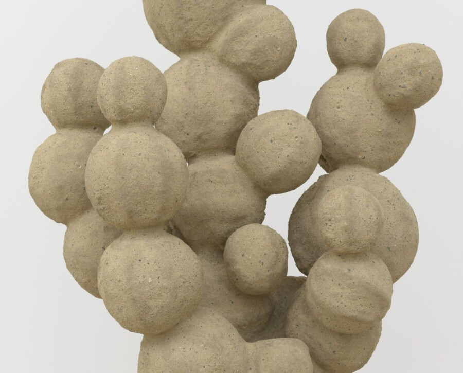

Public Exhibition Tour of Oren Pinhassi: Into Your Arm’s Length
Join for a tour of the exhibition Oren Pinhassi: Into Your Arm’s Length, led by Janine Mileaf, Executive Director and Chief Curator at The Arts Club of Chicago. Pinhassi has an important installation of new work at The Arts Club, the artist’s first solo exhibition in Chicago, featuring a series of figural and architectural pieces that occupy the gallery in an encompassing configuration. The exhibition aims to trigger physical engagements with desire and fragility.